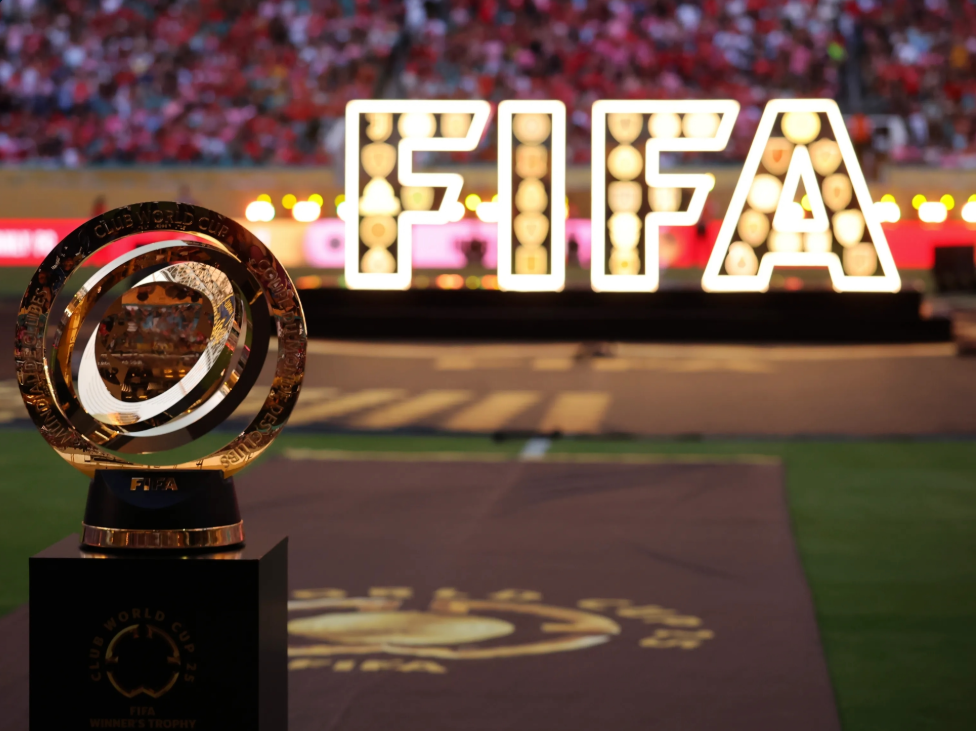

Strategic Objectives
- Grow participation in football worldwide, on and off the pitch
- Enhance the quality and standing of FIFA competitions
- Strengthen the football ecosystem and its stakeholders
- Maximise the sustainable growth of the global game
- Protect the integrity of football competitions
- Position FIFA as a trusted and transparent organisation

What FIFA does
Legal
Rules and reports, legal portal, Football Tribunal, decisions, Court of Arbitration for Sport (CAS), anti-doping, compliance, integrity, educational programmes, disciplinary, etc.
Transfer system
FIFA Clearing House, agents, transfer reports, transfer windows, educational programmes (transfers, agency), etc.
Women's Football
Strategy, programmes in club licensing, coach mentorship, professionalisation, benchmarking and health snapshot reports, etc.
Advancing football
FIFA Forward, Diploma in Club Management, clubs and leagues professionalisation, Club Benefits Programme, professional football landscape, etc.
Refereeing
International refereeing list, refereeing at tournaments, Laws of the Game, etc.
Innovation
Standards for video assistant referees (VAR), goal-line technology, playing surfaces, certified installations, providers, etc.
Talent development
New football metrics, technical reports, coaching resources, technical development, FIFA Talent Academies, FIFA Training Centre, etc.
Tournament organisation
Bidding processes, sustainability, legacy, volunteering, media rights, broadcasters, etc.
History
FIFA was founded in Paris in 1904 by seven national associations to oversee international competition among the national associations of the world. Since then, the organisation has grown to encompass 211 member associations and today it organises some of the most watched sporting events in the world, including the FIFA World Cup.
Over the decades, FIFA's role expanded well beyond the men's World Cup to include women's football, youth and age-group competitions, futsal, beach soccer, and the ongoing development of the Laws of the Game and refereeing standards used across the sport.